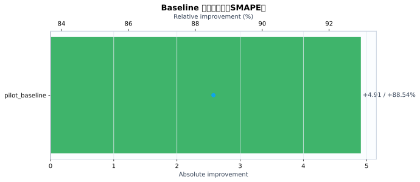
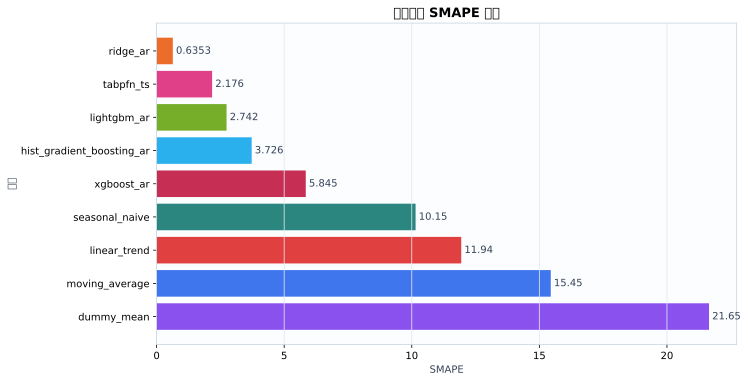
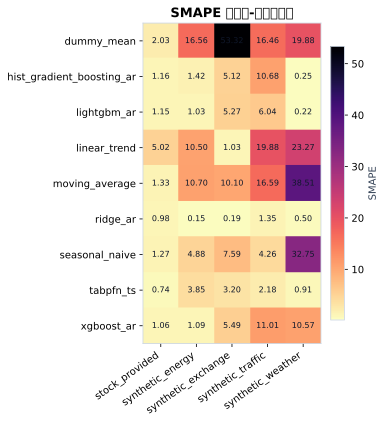
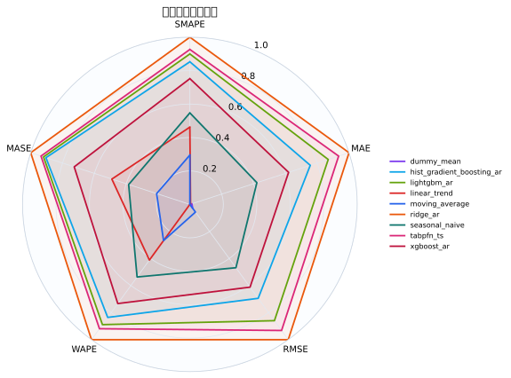
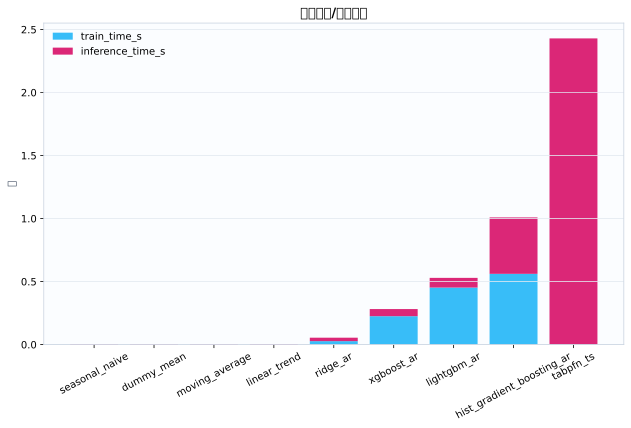
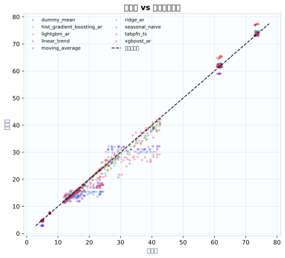
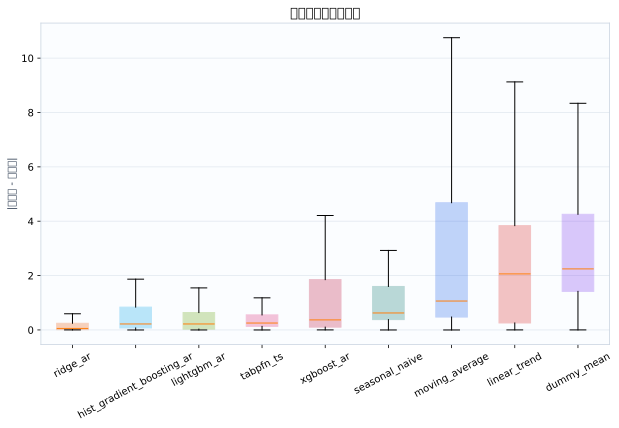

数据集5
模型9
指标行数45
预测行数6048
结论摘要
- 主指标 SMAPE 下，当前 run 的最佳模型是 ridge_ar，平均值为 0.6353。
- 相对 baseline pilot_baseline，当前最佳模型在 SMAPE 上提升 88.54% （absolute=+4.909）。
核心指标卡片
SMAPE
0.6353
最佳模型: ridge_ar
GPU_MEMORY_MB
0
最佳模型: dummy_mean
INFERENCE_TIME_S
0.003755
最佳模型: seasonal_naive
MAE
0.1852
最佳模型: ridge_ar
MASE
0.3227
最佳模型: ridge_ar
MSE
0.1068
最佳模型: ridge_ar
RMSE
0.2346
最佳模型: ridge_ar
TRAIN_TIME_S
0
最佳模型: tabpfn_ts
Baseline 对比
| baseline | metric | current_model | current_value | baseline_model | baseline_value | absolute_difference | relative_improvement_pct |
|---|---|---|---|---|---|---|---|
| pilot_baseline | smape | ridge_ar | 0.6353 | ridge_ar | 5.545 | 4.909 | 88.54 |
动态交互图表
指标排名动态图
残差直方图
效率-精度散点图
数据集排名轨迹
Matplotlib 可视化图表
Baseline 改变量图
{kind=link}

Baseline/模型平均指标柱状图
{kind=link}

数据集-模型热力图
{kind=link}

多指标雷达图
{kind=link}

运行时间图
{kind=link}

真实值-预测值散点图
{kind=link}

残差箱线图
{kind=link}

训练过程曲线
N/A：当前 run 目录未发现 loss/accuracy/TensorBoard/wandb 训练曲线文件。
错误分析与样本分析
当前支持预测任务的残差与真实-预测散点分析；分类 confusion matrix / ROC / PR 曲线需要真实分类输出后自动启用。
原始 Metrics
| run_id | model | dataset | domain | horizon | context_length | mse | mae | rmse | smape | wape | mase | train_time_s | inference_time_s | gpu_memory_mb |
|---|---|---|---|---|---|---|---|---|---|---|---|---|---|---|
| tabpfn_ts_20260528_155951 | dummy_mean | synthetic_energy | energy | 48 | 384 | 8.582 | 2.419 | 2.93 | 16.56 | 15.8 | 5.823 | 0.0004333 | 0.003578 | 0 |
| tabpfn_ts_20260528_155951 | seasonal_naive | synthetic_energy | energy | 48 | 384 | 0.576 | 0.72 | 0.7589 | 4.879 | 4.703 | 1.733 | 0.0002931 | 0.003313 | 0 |
| tabpfn_ts_20260528_155951 | moving_average | synthetic_energy | energy | 48 | 384 | 3.744 | 1.624 | 1.935 | 10.7 | 10.61 | 3.908 | 0.0002824 | 0.003306 | 0 |
| tabpfn_ts_20260528_155951 | linear_trend | synthetic_energy | energy | 48 | 384 | 3.206 | 1.595 | 1.79 | 10.5 | 10.42 | 3.839 | 0.0002809 | 0.003722 | 0 |
| tabpfn_ts_20260528_155951 | ridge_ar | synthetic_energy | energy | 48 | 384 | 0.0008416 | 0.02209 | 0.02901 | 0.1507 | 0.1443 | 0.05317 | 0.01531 | 0.02466 | 0 |
| tabpfn_ts_20260528_155951 | hist_gradient_boosting_ar | synthetic_energy | energy | 48 | 384 | 0.1611 | 0.2354 | 0.4014 | 1.421 | 1.537 | 0.5665 | 0.4002 | 0.4242 | 0 |
| tabpfn_ts_20260528_155951 | lightgbm_ar | synthetic_energy | energy | 48 | 384 | 0.1169 | 0.1741 | 0.3419 | 1.032 | 1.137 | 0.4191 | 0.4019 | 0.08273 | 0 |
| tabpfn_ts_20260528_155951 | xgboost_ar | synthetic_energy | energy | 48 | 384 | 0.09255 | 0.179 | 0.3042 | 1.087 | 1.169 | 0.4308 | 0.2431 | 0.05691 | 0 |
| tabpfn_ts_20260528_155951 | tabpfn_ts | synthetic_energy | energy | 48 | 384 | 0.3815 | 0.5605 | 0.6176 | 3.849 | 3.661 | 1.349 | 0 | 3.146 | 0 |
| tabpfn_ts_20260528_155951 | dummy_mean | synthetic_traffic | traffic | 48 | 384 | 39.34 | 5.455 | 6.272 | 16.46 | 16.26 | 4.017 | 0.0005996 | 0.004543 | 0 |
| tabpfn_ts_20260528_155951 | seasonal_naive | synthetic_traffic | traffic | 48 | 384 | 2.684 | 1.458 | 1.638 | 4.257 | 4.345 | 1.074 | 0.0004109 | 0.004639 | 0 |
| tabpfn_ts_20260528_155951 | moving_average | synthetic_traffic | traffic | 48 | 384 | 40.34 | 5.497 | 6.352 | 16.59 | 16.38 | 4.048 | 0.0004019 | 0.004769 | 0 |
| tabpfn_ts_20260528_155951 | linear_trend | synthetic_traffic | traffic | 48 | 384 | 65.57 | 6.486 | 8.097 | 19.88 | 19.33 | 4.776 | 0.0003865 | 0.005196 | 0 |
| tabpfn_ts_20260528_155951 | ridge_ar | synthetic_traffic | traffic | 48 | 384 | 0.3402 | 0.4607 | 0.5833 | 1.353 | 1.373 | 0.3392 | 0.02133 | 0.03519 | 0 |
| tabpfn_ts_20260528_155951 | hist_gradient_boosting_ar | synthetic_traffic | traffic | 48 | 384 | 23.74 | 3.456 | 4.873 | 10.68 | 10.3 | 2.545 | 0.4101 | 0.5749 | 0 |
| tabpfn_ts_20260528_155951 | lightgbm_ar | synthetic_traffic | traffic | 48 | 384 | 4.943 | 1.921 | 2.223 | 6.036 | 5.724 | 1.414 | 0.4047 | 0.08849 | 0 |
| tabpfn_ts_20260528_155951 | xgboost_ar | synthetic_traffic | traffic | 48 | 384 | 16.26 | 3.334 | 4.033 | 11.01 | 9.934 | 2.455 | 0.2053 | 0.05468 | 0 |
| tabpfn_ts_20260528_155951 | tabpfn_ts | synthetic_traffic | traffic | 48 | 384 | 0.6896 | 0.6699 | 0.8304 | 2.177 | 1.996 | 0.4933 | 0 | 2.545 | 0 |
| tabpfn_ts_20260528_155951 | dummy_mean | synthetic_weather | weather | 48 | 384 | 18.82 | 4.044 | 4.338 | 19.88 | 18.3 | 25.22 | 0.0004363 | 0.0024 | 0 |
| tabpfn_ts_20260528_155951 | seasonal_naive | synthetic_weather | weather | 48 | 384 | 41.83 | 6.191 | 6.468 | 32.75 | 28.02 | 38.6 | 0.000307 | 0.002578 | 0 |
| tabpfn_ts_20260528_155951 | moving_average | synthetic_weather | weather | 48 | 384 | 53.97 | 7.176 | 7.346 | 38.51 | 32.48 | 44.75 | 0.0002961 | 0.002508 | 0 |
| tabpfn_ts_20260528_155951 | linear_trend | synthetic_weather | weather | 48 | 384 | 24.23 | 4.653 | 4.922 | 23.27 | 21.06 | 29.01 | 0.0002932 | 0.002758 | 0 |
| tabpfn_ts_20260528_155951 | ridge_ar | synthetic_weather | weather | 48 | 384 | 0.01712 | 0.1093 | 0.1308 | 0.4956 | 0.4945 | 0.6812 | 0.02148 | 0.01656 | 0 |
| tabpfn_ts_20260528_155951 | hist_gradient_boosting_ar | synthetic_weather | weather | 48 | 384 | 0.004984 | 0.05246 | 0.07059 | 0.2453 | 0.2374 | 0.3271 | 0.4873 | 0.2824 | 0 |
| tabpfn_ts_20260528_155951 | lightgbm_ar | synthetic_weather | weather | 48 | 384 | 0.007717 | 0.05185 | 0.08784 | 0.2245 | 0.2347 | 0.3233 | 0.448 | 0.05644 | 0 |
| tabpfn_ts_20260528_155951 | xgboost_ar | synthetic_weather | weather | 48 | 384 | 6.335 | 2.264 | 2.517 | 10.57 | 10.25 | 14.11 | 0.1969 | 0.04212 | 0 |
| tabpfn_ts_20260528_155951 | tabpfn_ts | synthetic_weather | weather | 48 | 384 | 0.06418 | 0.2002 | 0.2533 | 0.9117 | 0.9063 | 1.249 | 0 | 1.538 | 0 |
| tabpfn_ts_20260528_155951 | dummy_mean | synthetic_exchange | economics | 48 | 384 | 4.431 | 2.1 | 2.105 | 53.32 | 42.13 | 43.17 | 0.0005256 | 0.003555 | 0 |
| tabpfn_ts_20260528_155951 | seasonal_naive | synthetic_exchange | economics | 48 | 384 | 0.1538 | 0.3659 | 0.3922 | 7.594 | 7.339 | 7.521 | 0.0003433 | 0.003559 | 0 |
| tabpfn_ts_20260528_155951 | moving_average | synthetic_exchange | economics | 48 | 384 | 0.2524 | 0.4813 | 0.5024 | 10.1 | 9.655 | 9.894 | 0.0003534 | 0.003611 | 0 |
| tabpfn_ts_20260528_155951 | linear_trend | synthetic_exchange | economics | 48 | 384 | 0.003268 | 0.05129 | 0.05716 | 1.03 | 1.029 | 1.054 | 0.0003186 | 0.004007 | 0 |
| tabpfn_ts_20260528_155951 | ridge_ar | synthetic_exchange | economics | 48 | 384 | 0.0001151 | 0.009669 | 0.01073 | 0.1937 | 0.194 | 0.1988 | 0.03372 | 0.02507 | 0 |
| tabpfn_ts_20260528_155951 | hist_gradient_boosting_ar | synthetic_exchange | economics | 48 | 384 | 0.08327 | 0.2509 | 0.2886 | 5.121 | 5.034 | 5.158 | 0.7501 | 0.5271 | 0 |
| tabpfn_ts_20260528_155951 | lightgbm_ar | synthetic_exchange | economics | 48 | 384 | 0.08718 | 0.258 | 0.2953 | 5.27 | 5.175 | 5.304 | 0.5155 | 0.08368 | 0 |
| tabpfn_ts_20260528_155951 | xgboost_ar | synthetic_exchange | economics | 48 | 384 | 0.09288 | 0.2682 | 0.3048 | 5.486 | 5.38 | 5.513 | 0.2209 | 0.05651 | 0 |
| tabpfn_ts_20260528_155951 | tabpfn_ts | synthetic_exchange | economics | 48 | 384 | 0.03323 | 0.1585 | 0.1823 | 3.197 | 3.18 | 3.259 | 0 | 2.586 | 0 |
| tabpfn_ts_20260528_155951 | dummy_mean | stock_provided | finance | 48 | 384 | 2.615 | 1.096 | 1.617 | 2.029 | 2.306 | 1.152 | 0.0005836 | 0.004797 | 0 |
| tabpfn_ts_20260528_155951 | seasonal_naive | stock_provided | finance | 48 | 384 | 0.5267 | 0.5104 | 0.7258 | 1.27 | 1.074 | 0.5364 | 0.0004297 | 0.004685 | 0 |
| tabpfn_ts_20260528_155951 | moving_average | stock_provided | finance | 48 | 384 | 0.4378 | 0.5146 | 0.6617 | 1.329 | 1.083 | 0.5408 | 0.0004178 | 0.004897 | 0 |
| tabpfn_ts_20260528_155951 | linear_trend | stock_provided | finance | 48 | 384 | 8.237 | 2.446 | 2.87 | 5.017 | 5.147 | 2.571 | 0.0004107 | 0.005276 | 0 |
| tabpfn_ts_20260528_155951 | ridge_ar | stock_provided | finance | 48 | 384 | 0.1757 | 0.3244 | 0.4192 | 0.9834 | 0.6825 | 0.3409 | 0.04413 | 0.03492 | 0 |
| tabpfn_ts_20260528_155951 | hist_gradient_boosting_ar | stock_provided | finance | 48 | 384 | 0.3615 | 0.4305 | 0.6012 | 1.163 | 0.9057 | 0.4524 | 0.7585 | 0.4292 | 0 |
| tabpfn_ts_20260528_155951 | lightgbm_ar | stock_provided | finance | 48 | 384 | 0.3035 | 0.3997 | 0.5509 | 1.146 | 0.8409 | 0.42 | 0.4915 | 0.07293 | 0 |
| tabpfn_ts_20260528_155951 | xgboost_ar | stock_provided | finance | 48 | 384 | 0.1987 | 0.3358 | 0.4457 | 1.064 | 0.7065 | 0.3529 | 0.2597 | 0.07224 | 0 |
| tabpfn_ts_20260528_155951 | tabpfn_ts | stock_provided | finance | 48 | 384 | 0.1716 | 0.2759 | 0.4142 | 0.7442 | 0.5806 | 0.29 | 0 | 2.333 | 0 |
配置参数
展开/折叠配置
{
"/home/wanyi/zy_test/tabpfn-ts-benchmark/configs/config.yaml": {
"defaults": [
{
"dataset": "etth1"
},
{
"model": "seasonal_naive"
},
{
"experiment": "e1_zeroshot"
},
"_self_"
],
"seed": 42,
"output_dir": "results",
"wandb": {
"project": "tabpfn-quant",
"mode": "offline",
"entity": null
},
"hydra": {
"run": {
"dir": "outputs/${now:%Y-%m-%d}/${now:%H-%M-%S}"
}
}
}
}运行环境
{
"python": "3.10.12",
"platform": "Linux-6.8.0-111-generic-x86_64-with-glibc2.35",
"git_head": "N/A",
"git_dirty": false
}Warnings
- 无
产物链接
- metrics.json
- summary.csv
- 源 run 目录: /home/wanyi/zy_test/tabpfn-ts-benchmark/results/full_benchmark_v2_c384_h48_s3
- 主指标: smape